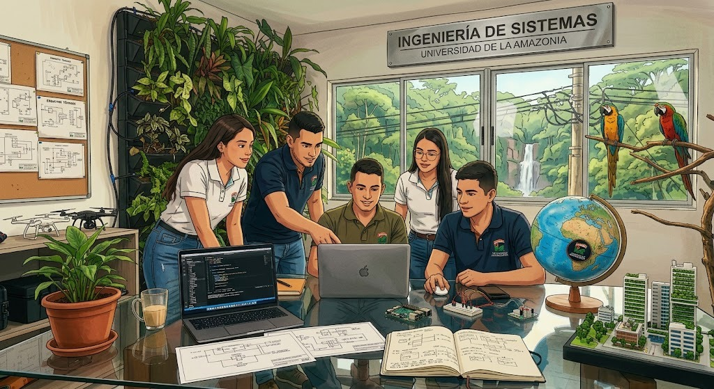

Nuestra Razón de Ser

Misión
El programa académico Ingeniería de Sistemas de la Universidad de la Amazonia, asume como encargo social la formación de profesionales íntegros, con capacidad para crear, innovar, formular y solucionar problemáticas organizacionales y productivas, apoyados en el desarrollo de sistemas de información soportados en las diferentes tecnologías informáticas, con el propósito de contribuir al desarrollo social, económico y tecnológico de la región amazónica y del país.